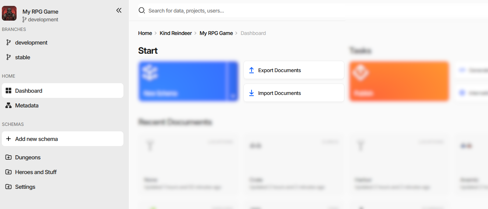
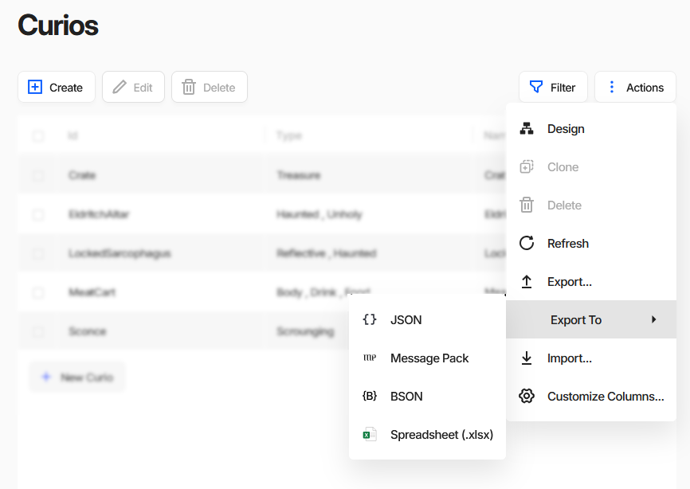
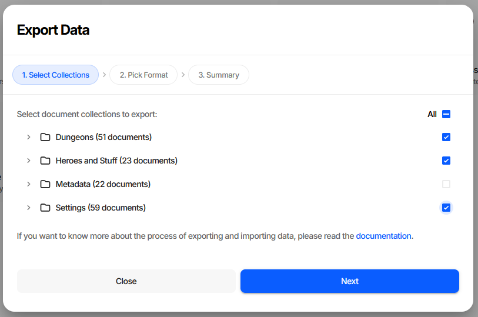
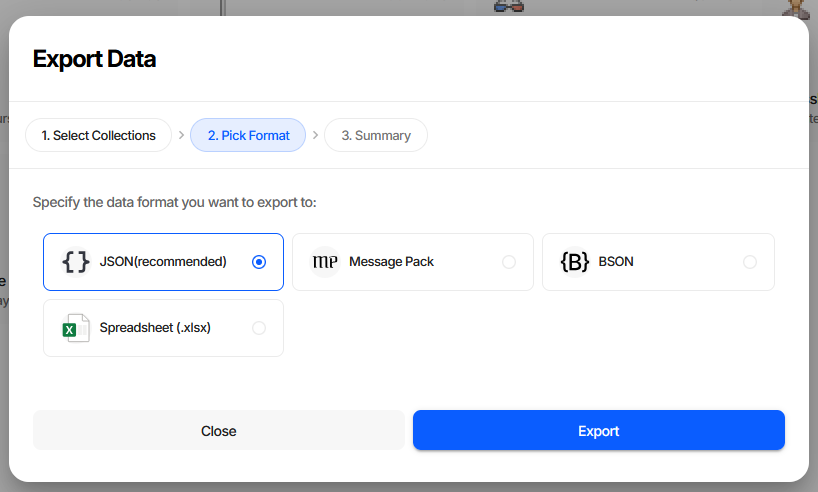
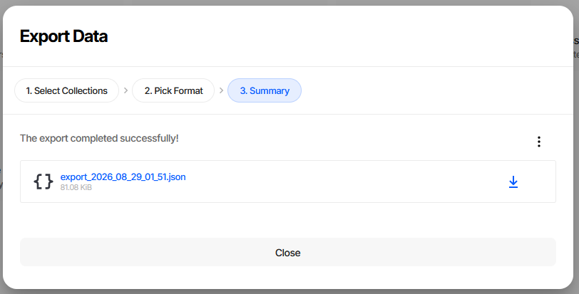
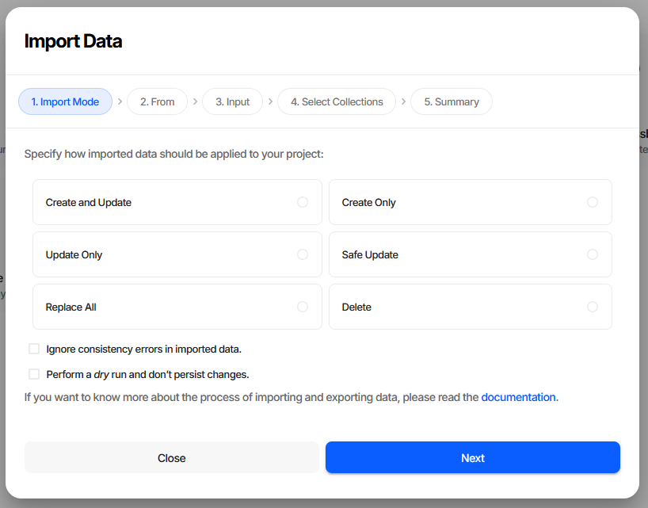
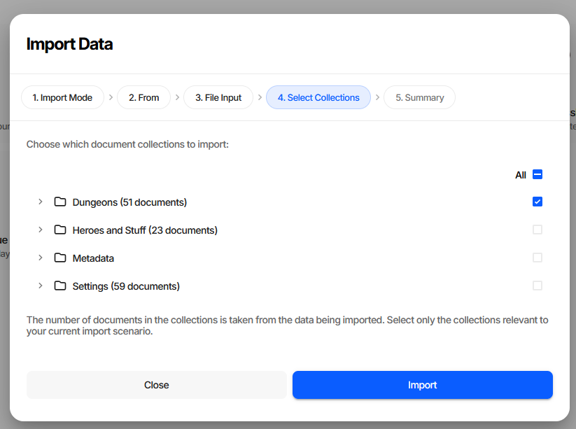
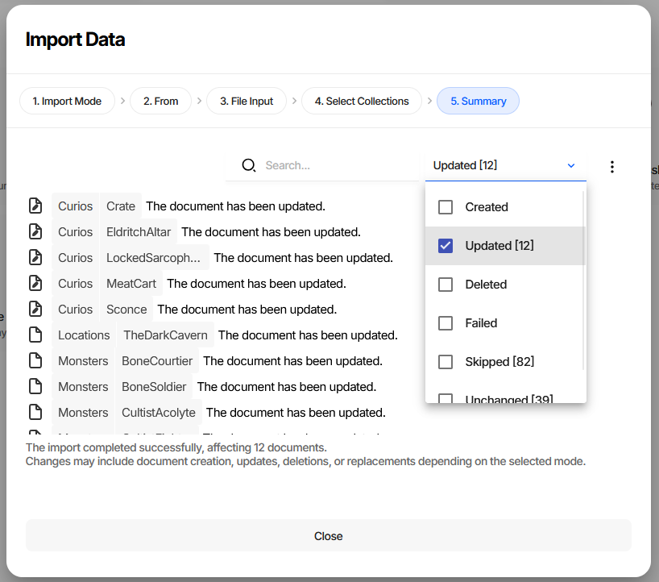
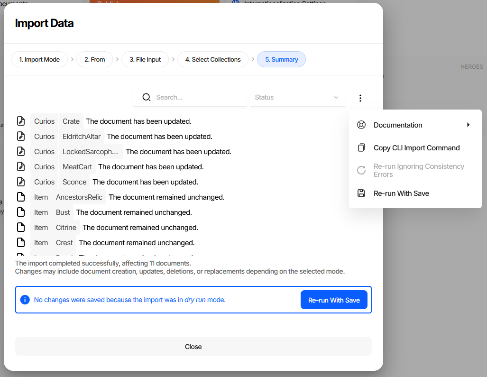
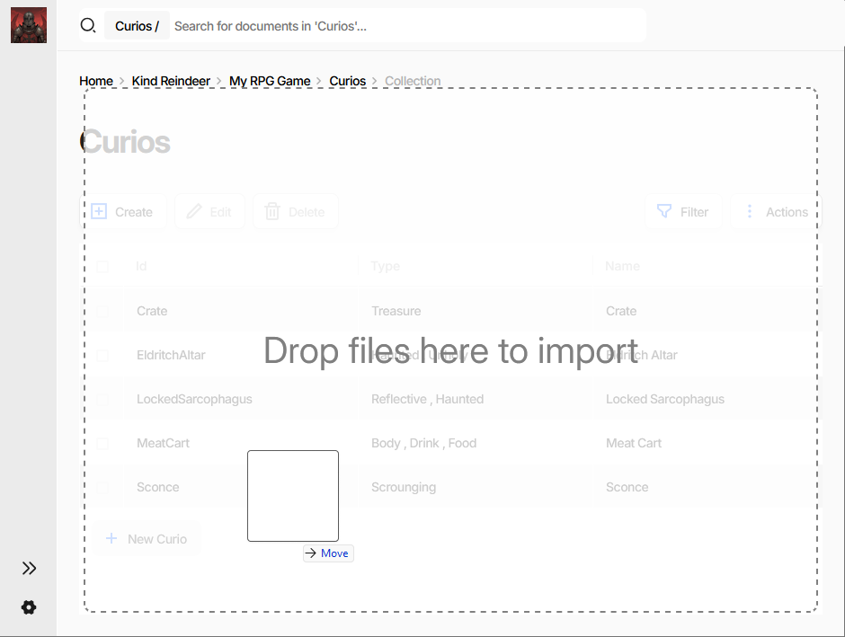

Importing and Exporting Data
Export writes documents out of a project into a file; import reads them back in. The round trip is how game data leaves the editor for version control, bulk edits in external tools, or a script, and how externally produced data gets in.
Both directions are wizards in the editor, and both have a CLI equivalent for automation. See CI/CD for pipeline examples.
Note
Export is not publication. An export is a full-fidelity copy that Charon can read back. A publication strips everything the game does not need and is meant for the generated code, not for re-import.
Where Import and Export Live
Both operations have two entry points.
The Start panel on the dashboard works on the whole project:

Export Documents and Import Documents open the wizards with nothing preselected, so you choose the collections inside. Import Documents is disabled when the data source is read-only.
A document list has the same two operations scoped to one collection, in its Actions menu:

Export… and Import… open the same wizards with the current collection already selected. Export To skips the wizard entirely - see Quick Export Without the Wizard.
Exporting Data
Step 1. Select Collections

Collections are shown as a tree, grouped into folders, each with its document count. The All checkbox at the top toggles everything, and shows a dash when the selection is partial. Expand a folder to pick individual collections. At least one is required to continue.
The Metadata folder holds the project’s schema definitions. Leave it ticked when the file should describe its own structure, untick it to export documents alone.
Step 2. Pick Format

Format |
When to use |
|---|---|
JSON (recommended) |
Default. Readable, diffable, and accepted by every external tool. Keep it unless you have a reason not to. |
Message Pack |
Compact binary. Smaller and faster to parse, not human-readable. |
BSON |
Binary JSON, for pipelines that already speak it. |
Spreadsheet (.xlsx) |
One sheet per collection, for review or editing by people who do not work in JSON. Round-trips back through import. |
Step 3. Summary

The file is offered as a download, named export_<year>_<month>_<day>_<hour>_<minute>.<extension> and
annotated with its size. The download arrow next to it turns into a green check once you have taken it.
The ⋮ menu holds Copy CLI Export Command, which puts the exact CLI equivalent of the choices you just made on the clipboard, and a Documentation submenu linking to this page and the command reference.
Tip
The wizard remembers the collections and format you picked last time, so a repeated export is Next, Next, Export.
CLI equivalent
dnx dotnet-charon -- DATA EXPORT \
--dataBase "gamedata.json" \
--schemas Item Character \
--output "items.json" \
--outputFormat json
Key parameters:
--schemas- collections to export. Supports wildcards (*Item*) and exclusion (!Deprecated). Omit it to export everything.--properties- narrows the export to specific properties. There is no equivalent in the wizard, which always exports whole documents.--outputFormat-json,bson,msgpackorxlsx.
See DATA EXPORT for the full parameter list.
Quick Export Without the Wizard
Export To in a collection’s Actions menu downloads that collection immediately in the chosen format - JSON, Message Pack, BSON or Spreadsheet - with no steps to click through. It is the fast path when you just want the current collection on disk.
Importing Data
Step 1. Import Mode

The mode decides how incoming documents meet the ones already in the project.
Mode |
|
Effect |
|---|---|---|
Create and Update |
|
Default. Creates documents that do not exist yet, updates the ones that do. |
Create Only |
|
Creates new documents. Existing documents are never touched. |
Update Only |
|
Updates existing documents. Nothing new is added. |
Safe Update |
|
Updates existing documents without adding, removing or reordering embedded documents. The mode to use when the document structure must survive intact - imported translations, for example. |
Replace All |
|
Replaces the collection with the imported documents. Everything currently in it is removed. |
Delete |
|
Deletes the documents listed in the file. Nothing is created or updated. |
Warning
Replace All removes every document in the selected collections that is not in the file. Run it as a dry run first.
Two checkboxes on this step change how the import behaves:
Ignore consistency errors in imported data - drops the integrity checks and keeps only the repairs. See Validation During Import for exactly what this trades away.
Perform a dry run and don’t persist changes - runs the entire import, produces the full report, and writes nothing. Worth doing before any import you have not run before.
Step 2. From
Choose File to pick a file from your device, or Clipboard to paste JSON text directly into the wizard.
Step 3. File Input / Clipboard Input
For File, browse to the file. Accepted formats are JSON (.json), Message Pack (.msgpack), BSON
(.bson) and Spreadsheet (.xlsx); anything else is rejected on this step with an Unknown file
format error. For Clipboard, paste a JSON object into the text area - it is checked as valid JSON when
you leave the field.
Step 4. Select Collections

The same collection tree as in the export wizard, with one difference worth knowing: the document counts come from the file being imported, not from the project. Charon reads the file’s structure to build this list, which doubles as a sanity check - in the screenshot above, Metadata carries no count because the file contains no schema definitions.
If the file cannot be read, this step shows Failed to peek into imported data with the server error, plus Retry and Ignore and Continue. Continuing is valid - the import itself may still succeed - but you lose the ability to narrow the collection list.
Step 5. Summary

Every affected document is listed with its status, searchable by name and filterable by status. The filter carries counts, so the shape of the import is visible before you read a single row - the screenshot above is filtered to the 12 updated documents out of a run that also skipped 82 and left 39 unchanged.
Status |
Meaning |
|---|---|
Created |
The document did not exist and was added. |
Updated |
An existing document was changed. |
Deleted |
The document was removed - |
Failed |
The document was rejected. The row carries the reason. |
Skipped |
The mode did not apply to this document - a new document in |
Unchanged |
The document matched what was already stored. |
An import that finishes entirely as Unchanged usually means the file matched the project exactly, not that something went wrong.
After a dry run the report is the same, with a banner making clear that nothing was written and a Re-run With Save button to commit the same import for real:

The ⋮ menu offers:
Copy CLI Import Command - the CLI equivalent of this import, ready for a build script.
Re-run Ignoring Consistency Errors - retries without integrity checks. Available only when the run actually produced failures and the checks were on, which is why it is greyed out above.
Re-run With Save - re-runs a dry run for real. Available only after a dry run.
Faster Paths
Dragging a data file onto a document list - the grid turns into a Drop files here to import target - opens the import wizard with the file, the collection and Create and Update already filled in, so it starts at Select Collections:

Pasting a JSON array of documents while a document list is focused does the same with the clipboard text. Neither shortcut is a way to write data without seeing the report - both still finish on the summary step.
CLI equivalent
dnx dotnet-charon -- DATA IMPORT \
--dataBase "gamedata.json" \
--schemas Item \
--input "items.json" \
--inputFormat auto \
--mode safeUpdate \
--dryRun
Key parameters:
--inputFormat-autoby default, detected from the file extension.--mode- see the table above.--dryRun- the CLI equivalent of Perform a dry run. Drop it to persist the changes.--output- where the import report goes. Without it the report is discarded and the command fails if any document failed to import, which is what makes an import usable as a CI step.
See DATA IMPORT for the full parameter list.
Validation During Import
Imported documents pass through the same validation engine as documents edited in the UI, but the profile differs between the wizard and the command line - and the two defaults are opposites.
Situation |
Checks and repairs applied |
|---|---|
Import wizard, default |
|
Import wizard, Ignore consistency errors checked |
|
|
|
Warning
DATA IMPORT defaults to repairs without integrity checks. A file with dangling references or missing
required values is accepted quietly, and the problem surfaces later as an error count in the editor or a
failure in the game. Whenever the input is not fully trusted, ask for the checks explicitly:
dnx dotnet-charon -- DATA IMPORT \
--dataBase "gamedata.json" \
--input "items.json" \
--validationOptions repair repairRequiredWithDefaults \
checkRequirements checkFormat checkUniqueness \
checkReferences checkSpecification checkConstraints
Following the import with a DATA VALIDATE run achieves the same thing in two steps.
To go the other way in the UI - accept data that fails the checks - tick Ignore consistency errors in imported data, or use Re-run Ignoring Consistency Errors on the summary once you have seen what failed.
Note
Schema definitions are always validated in full. The relaxed profiles apply to documents only.
See Validation for what each flag does.
Working with Exported Data
Modifying Exported Data
Exported data can be edited by hand or with a script. A single value with yq:
yq -i '.Collections.Item[0].Damage = 5' items.json
The same file can be converted to another format, restructured, or generated from a spreadsheet, as long as what comes back matches the expected shape.
Creating Data from Scratch
Data files can be authored externally and imported, provided they conform to the required structure: a
Collections object holding an array of documents per schema.
{
"Collections": {
"Item": [
{ "Id": "BronzeSword", "Name": "Bronze Sword", "Damage": 4 }
]
}
}
See Game Data Structure for the full format specification.
Document Identification
Omit
Idand one is generated.Provide
Idif the document is referenced elsewhere in the data.Use a temporary identifier of the form
_ID_<UNIQUE>when a document needs to be referenced by another document in the same file - including itself, as in a tree node pointing at its own parent. Every occurrence of the same placeholder resolves to the same generated identifier across the whole import.
Partial Updates
In the update modes documents need not be complete. A file containing only the identifier and the changed properties is enough:
[
{ "Id": "IronSword", "Damage": 10 }
]
Everything not mentioned keeps its current value.